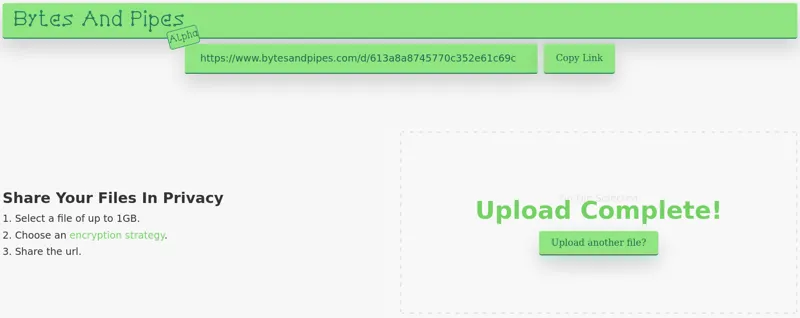

Bytes And Pipes
A file-sharing web application using AES256-GCM encryption.
A file-sharing web application using AES256-GCM encryption.
A mini-social network site to share your adventures online.
Unsupported device

A command line utility to resize images, convert them into different formats, with an option to compress the output to share them or upload them to the cloud easily.
Check your passwords agains the "Have I Been Pwned?" database. Only the first characters of a SHA-1 hash are sent so there is no way your password will be exposed to anyone.